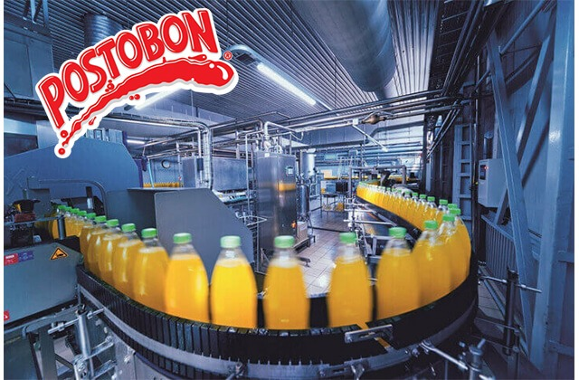

Coherentes con nuestro propósito superior -una invitación para que las personas se tomen la vida y habiten un mundo sostenible- hacemos de la sostenibilidad el centro de nuestras acciones, para cumplir con las metas de la organización y contribuir a los Objetivos de Desarrollo Sostenible de las Naciones Unidas. Entendemos el impacto directo o indirecto de nuestras acciones sobre las personas y el medioambiente. Nuestros esfuerzos se encauzan a aportar a la transición hacia una economía libre de carbono con acciones de reducción, mitigación, compensación e incluso de regeneración, lo cual hoy nos permite ser una compañía CARBONO NEUTRO.
En Postobón vivimos para dejar huella, por eso queremos contar con el mejor talento humano del país para que se tomen la vida con compromiso, responsabilidad y orgullo, logrando los objetivos que tenemos como compañía, los cuales son vitales para el desarrollo de Colombia. Actualmente, nuestro talento humano esta conformado por cerca de 11.000 personas que constantemente viven en equipo para un mismo reto. Te invitamos a postularte a nuestras distintas convocatorias de empleo y hacer parte del talento Postobón.